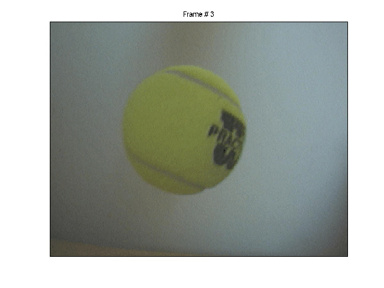

Configuring Callbacks
Callback functions are executed when an associated event occurs. To configure a callback to execute for a particular event, configure one of the video input object's callback properties:
This tutorial uses a callback function, found in the
directory, that displays the N'th frame, where N is provided as an input argument to the callback function.
% Add the callback function directory to the MATLAB path. utilpath = fullfile(matlabroot, 'toolbox', 'imaq', 'imaqdemos', 'html', 'callbacks', 'callbackfcn'); addpath(utilpath);
% Access an image acquisition device. vidobj = videoinput('winvideo', 1); % Acquire an infinite number of frames when manually triggered. triggerconfig(vidobj, 'manual'); vidobj.FramesPerTrigger = inf;
% Specify the N'th frame the callback function will display. frameNumber = 3; % Have the callback function executed when the acquisition ends. set(vidobj, 'StopFcn', {'util_showframe', frameNumber});
% Initiate the acquisition.
start(vidobj)Upon triggering the image acquisition device, a tennis ball is dropped within the camera's view.
% Trigger the object for logging.
trigger(vidobj)% Stop the acquisition. This causes the callback % function to execute and display the N'th frame. stop(vidobj)
% Once the video input object is no longer needed, delete % it and clear it from the workspace. delete(vidobj) clear vidobj
% Remove the callback function directory from the MATLAB path.
rmpath(utilpath);See also IMAQDEVICE/PROPINFO.